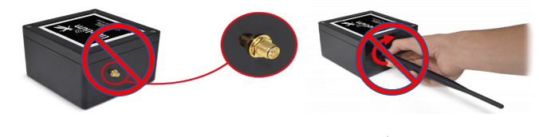
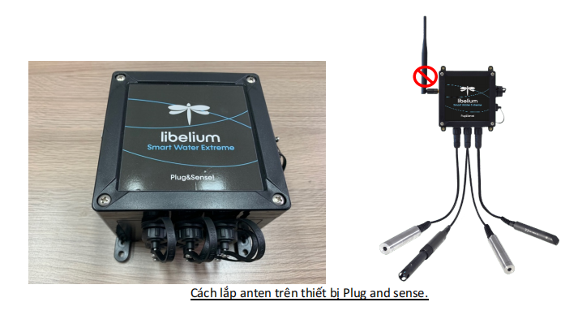
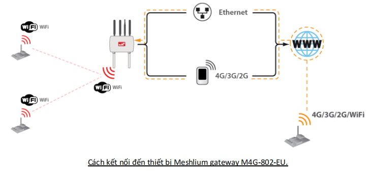
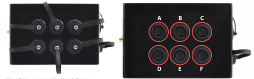
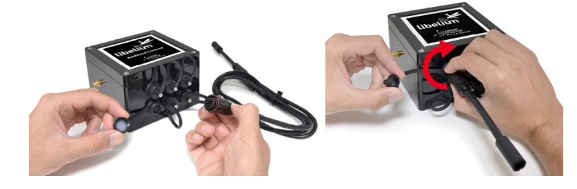
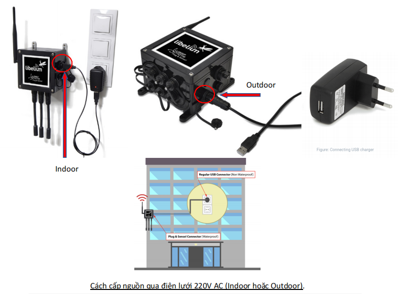
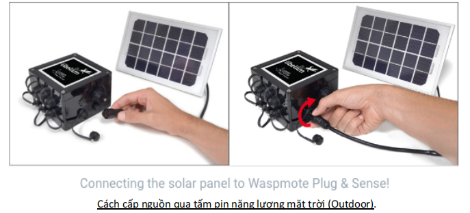
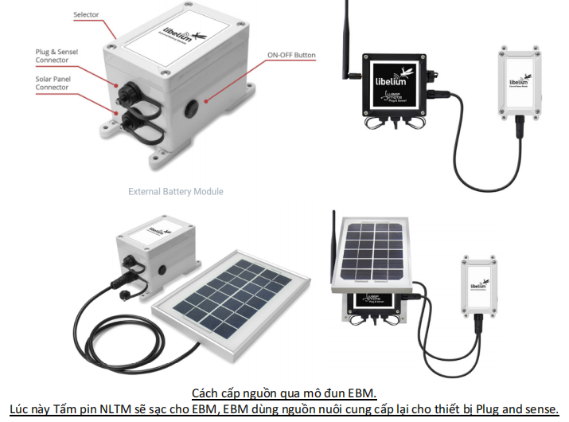
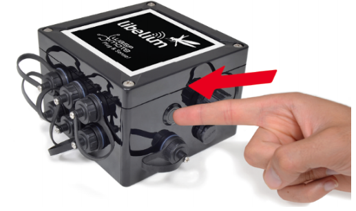

<!DOCTYPE html>
<html lang="en">
<head>
    <meta charset="UTF-8">
    <meta http-equiv="X-UA-Compatible" content="IE=edge">
    <meta name="viewport" content="width=device-width, initial-scale=1.0">
    <title>SWXB-W</title>
</head>
<body  style="font-size: 20px;">
    <h2>Hướng dẫn sử dụng thiết bị SWXB-W</h2>
    <h4>1. Bước 1: Lắp Anten</h4>
    <p>Do anten Wifi đã được tích hợp sẵn bên trong hộp thiết bị nên không cần lắp thêm anten bên ngoài. 
        Người sử dụng có thể truyền nhận dữ liệu cảm biến thông qua giao tiếp WiFi (2.4Ghz) lên Internet 
        trực tiếp (hoặc có thể kết nối đến Meshlium gateway M4G-802-EU) như hình bên dưới:
        <br>
          
        <br>
         
       <br>
         
    </p>
    <h4>2. Bước 2: Lắp cảm biến:</h4>
    <p>Sản phẩm Smart Water Xtreme cho phép gắn tối đa 6x cảm biến trong ứng dụng nông nghiệp và đo 
        chất lượng môi trường nước cùng lúc (chi tiết xem tại link:
    <br>
    <a style="font-size: 17px;" href="https://development.libelium.com/smart-water-xtreme-sensor-guide/sensors-probes#important%EF%BF%BDnotes">https://development.libelium.com/smart-water-xtreme-sensor-guide/sensors-probes#important%EF%BF%BDnotes)</a>
        <br>
        Tuỳ theo các socket A, B, C, D, E, F (các ngỏ vào dùng để gắn cảm biến), mà các cảm biến phù hợp 
        được sử dụng để gắn trực tiếp theo hướng dẫn sau:
        <br>
         
        <br>
         
    </p>
    <h4>3. Bước 3: Cách cấp nguồn và khởi động thiết bị:</h4>
    <p>Thiết bị khi khách hàng nhận được đã được PHA sạc đầy pin. Để triển khai ứng dụng thực tế, bên 
        dưới là các cách cấp nguồn cho thiết bị (tuỳ theo vị lắp đặt mà khách hàng có thể chọn 1 trong 
        những cách sau):
    <br>
    1. Cấp nguồn qua điện lưới 220V AC <br> 
    2. Cấp nguồn qua tấm pin năng lượng mặt trời <br>
    3. Cấp nguồn qua mô đun EBM (External Battery Module) <br>
    <i> Chú ý: Khi sử dụng cổng USB của thiết bị gắn với máy tính bằng cáp USB 2 đầu (Type B) thì thiết bị sẽ tự động được sạc 
        mà không cần bật nút nguồn trên thiết bị thông qua nguồn 5V từ máy tính cung cấp.</i> <br>
         <br>
         
        <br>
         
        <br>
        Sau khi lắp nguồn cho thiết bị, bước tiếp theo là khởi động thiết bị bằng nút nhấn bên dưới: <br>
         
        <br>
        Khi nhấn nút nguồn, sẽ có đèn led nhấp nháy khá nhanh, thiết bị sẽ tự hoạt động theo cấu hình mặc 
        định bên trong. Người dùng có thể tuỳ chỉnh cấu hình theo ứng dụng thực tế được mô tả trong 
        bước tiếp theo.
        <br>
        <i>Trường hợp nếu nguồn sắp hết, có thể dùng dây cáp có đầu 2 đầu USB (Type B) gắn thiết bị, đầu còn lại gắn vào cục sạc
            USB tiêu chuẩn hoặc có thể gắn trực tiếp vào máy tính qua cổng USB bình thường để sạc pin cho thiết bị. Lúc này 
            KHÔNG cần bật nút nguồn trên thiết bị, pin bên trong sẽ tự động được sạc, như hình ví dụ bên dưới:</i>
    </p>
    <h4>4. Bước 4: Cấu hình</h4>
    <p>Thiết bị này có tên là <b>Smart Water Xtreme</b> , dùng trong nông nghiệp hoặc trong môi trường nước, 
        để gắn với các cảm biến đo chất lượng môi trường nước (ví dụ đo các chỉ tiêu chất lượng của nước 
        trong thuỷ sản, độ mặn trên sông.. như Nhiệt độ nước, pH, Oxy hoà tan (DO), Salinity, COD, BOD, 
        NH4+, NO2-, Coliform…v.v và gửi giá trị đo được đến Internet trực tiếp hay thông qua thiết bị
        Meshlium trung tâm có hỗ trợ cùng giao tiếp WiFi (2.4Ghz). <br>
        1. Tải và cài đặt môi trường IDE để phát triển và cấu hình tại liên kết: <br>
        <a href="https://development.libelium.com/plug-and-sense/software"> https://development.libelium.com/plug-and-sense/software</a> <br>
        2. Xem tài liệu hướng dẫn cấu hình tại liên kết: <br>
        <a href="https://development.libelium.com/plug-andsense/documentation/programming"> https://development.libelium.com/plug-andsense/documentation/programming</a>
        <br>
        3. Tham khảo các ví dụ mẫu tại liên kết: <br>
        <a href="https://development.libelium.com/plug-and-sense/code-examples">https://development.libelium.com/plug-and-sense/code-examples</a>
        <br>
        4. Để cấu hình theo các ứng dụng cụ thể cho dòng sản phẩm Smart Water Xtreme, tham khảo chi 
        tiết tại liên kết: <br>
        <a href="https://development.libelium.com/smart-water-xtreme-sensor-guide/boardconfiguration-and-programming#hardware-configuration">https://development.libelium.com/smart-water-xtreme-sensor-guide/boardconfiguration-and-programming#hardware-configuration.</a>
    </p>
</body>
</html>